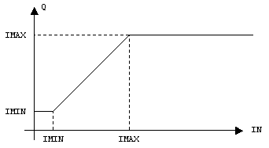
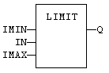
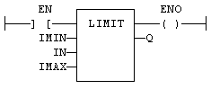

Function
Bounds an integer between low and high limits.
|
Name |
Type |
Description |
|
IMIN |
DINT |
Low bound. |
|
IN |
DINT |
Input value. |
|
IMAX |
DINT |
High bound. |
|
Name |
Type |
Description |
|
Q |
DINT |
IMIN if IN < IMIN; IMAX if IN > IMAX; IN otherwise. |

In LD language, the input rung (EN) enables the operation, and the output rung keeps the state of the input rung. In IL language, the first input must be loaded before the function call. Other inputs are operands of the function, separated by a coma.
Q := LIMIT (IMIN, IN, IMAX);

The comparison is executed only if EN is TRUE.
ENO has the same value as EN.
